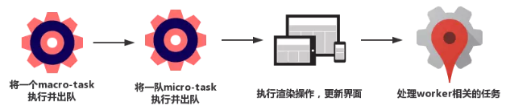

网上看了好多关于 JS 事件循环的文章，从各个文章中吸收了点自己需要的，整理总结如下。
JS 运行机制
JS是单线程的，某一时刻只能执行特定的一个任务，并且会阻塞其他任务执行，浏览器使用事件循环（Event Loop）机制来处理事件。
事件循环的任务队列有两种：macro task 和 micro task。
常见的 macro task 有：script（整体代码）、setTimeout、setInterval、I/O、UI交互事件。
常见的 micro task 有：promise.then、process.nextTick、MutationObserver。
一次完整的 Event loop 过程如下：
- 初始状态：调用栈为空，micro task 为空，macro task 有script（整体代码）。
- 接着：执行macro task 中的 script 代码，碰到同步任务，推入调用栈执行，碰到异步任务，将其分发到对应的任务队列中。此时，macro task 中的第一个任务（script）执行完了，script 被移出 macro 队列，
- 然后：开始清空 micro task 队列。也就是，执行一个 macro 队列，清空所有的 micro 队列。
- 执行渲染操作，更新界面。
- 检查看是否有 web worker 任务，有的话则处理。
每一次循环都是这样一个过程：

以一个简单例子描述：1
2
3
4
5
6
7
8
9
10
11
12
13
14
15
16console.log('script start')
setTimeout(function() {
console.log('setTimeout')
}, 0)
new Promise(resolve => {
console.log('Promise')
resolve()
}).then(function() {
console.log('promise1')
}).then(function() {
console.log('promise2')
})
console.log('script end')
分析一下执行过程：
- 初始状态：macro 中是整体的 script 代码。
- 开始执行 script，第一个console.log(‘script start’)，直接输出。
- 接着碰到 setTimeout，将其放入 macro 中。
- 接着 new promise 直接打印出 Promise，因为 Promise 实例一旦创建，执行器立刻执行，后续的.then放入 micro 中。
- 直接打印 script end。
- 此时，macro 中的第一个任务结束，要开始清空 micro 了，于是输出、promise1、promise2。
- 接着执行下一轮事件循环，执行下一个 macro task，输出 setTimeout。
于是，最终输出顺序是：script start => Promise => script end => promise1 => promise2 => setTimeout。
如果加上 async/await 呢？
1 | console.log('script start') |
加上 async/await 发现「async1 end」的输出顺序有了差异。
chrome 70 版本是：1
script start => async2 end => Promise => script end => promise1 => promise2 => async1 end => setTimeout。
chrome 73 版本是：1
script start => async2 end => Promise => script end => async1 end => promise1 => promise2 => setTimeout。
所以问题是await 做了什么？async/await 其实是 promise 的语法糖，promise 的事件循环机制理解了，那将 await 转化为 promise 就好理解了。
我们知道 async 函数总会返回一个 promise，看官方规范：
也就是说：
1 | async function async1() { |
等价于：1
2
3
4
5function async1() {
return RESOLVE(async2).then(()=>{
console.log('async1 end')
})
}
而 RESOLVE() 几乎等于 Promise.resolve()。几乎等于的意思就是还是有区别，下面看具体区别。
RESOLVE() vs Promise.resolve()
如果参数是个非 thenable 值，那么 Promise.resolve(non-thenable) 等价于 RESOLVE(non-thenable)。
但如果是个 thenable 对象，就不相等了，因为
1 | // RESOLVE() |
等价于1
2
3
4
5new Promise((resolve, reject) => {
Promise.resolve().then(() => {
thenable.then(resolve)
})
})
也就是说：RESOLVE() 会产生一个新的 promise，尽管该 promise 会 resolve，但这个过程是异步的，所以进入队列的是 Promise.resolve 的 then 过程，thenable 的 then 要等到执行到该 promise 的 then 之后才能执行，所以时序会靠后，举个明显的例子：
1 | // RESOLVE(thenable) |
但1
2
3
4
5
6
7
8
9
10// Promise.resolve(thenable)
let p1 = Promise.resolve(1)
Promise.resolve(p1).then(res => {
console.log(res)
})
p1.then(res => {
console.log(2)
})
//1
//2
回到上面await：
1 | async function async1() { |
等价于：1
2
3
4
5function async1() {
return RESOLVE(async2).then(() => {
console.log('async1 end')
})
}
再等价于：1
2
3
4
5
6
7
8
9function async1() {
new Promise((resolve, reject) => {
Promise.resolve().then(() => {
async2().then(resolve)
})
}).then(() => {
console.log('async1 end')
})
}
所以，「async1 end」的输出会靠后。
Await 规范的更新
根据最新的TC39决议，await 将直接使用 Promise.resolve() 相同语义。
也就是说：
1 | async function async1() { |
等价于：1
2
3
4
5function async1() {
Promise.resolve(async2).then(()=>{
console.log('async1 end')
})
}
Promise.resolve(p): 如果传入的 p 是一个 promise 实例，则会直接返回 p，不做任何修改，所以再次等价于：1
2
3
4
5function async1() {
async2().then(()=>{
console.log('async1 end')
})
}
chrome canary 73 采用了这种实现，所以输出会靠前。
参考文章：
https://github.com/xianshenglu/blog/issues/60
https://segmentfault.com/q/1010000016147496